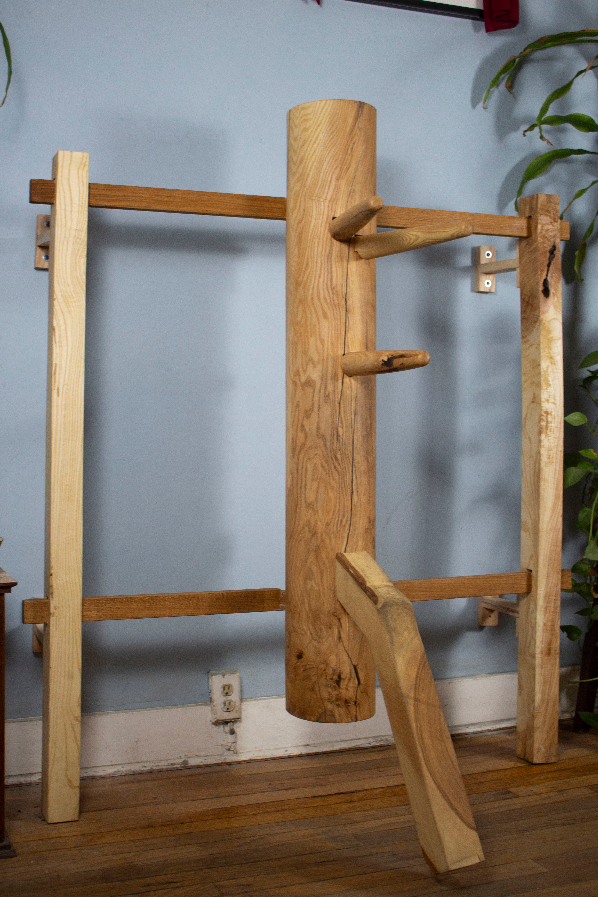
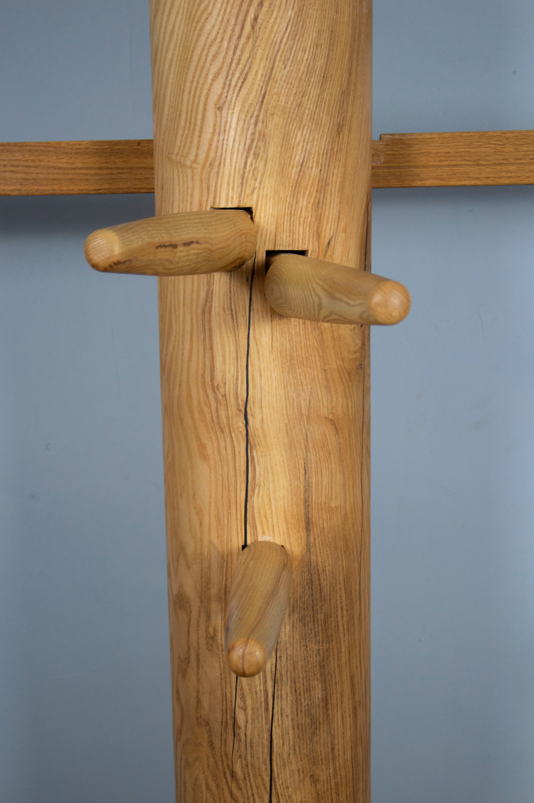
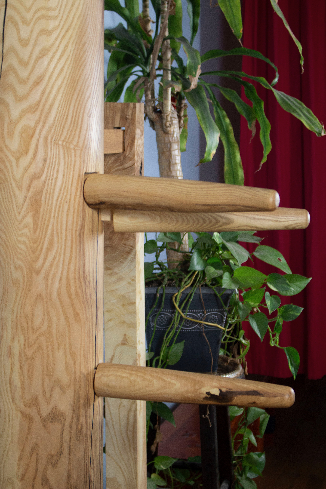
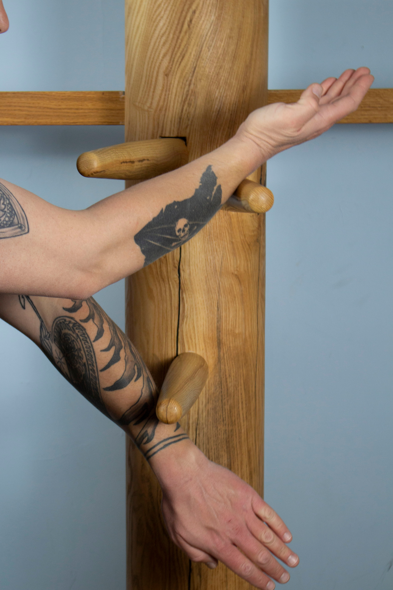
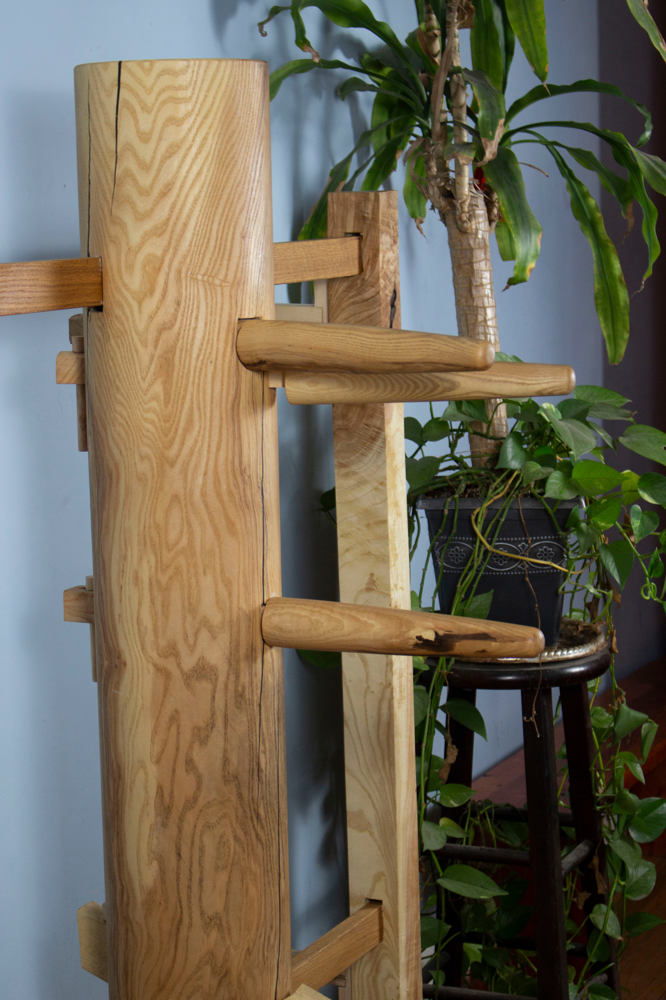

A handcrafted Ving Tsun training tool built by an inner circle practitioner — engineered for decades of use and shaped by years of actual training.



The Muk Yan Jong — literally "wooden man post" — is the most advanced training apparatus in the Ving Tsun system.
A vertical hardwood post with two upper arms, one lower arm, and a leg, the jong represents a fixed opponent. It doesn't yield, doesn't fatigue, and doesn't flinch — making it the perfect partner for developing the honest, structural power that Ving Tsun demands.
It is also called the Mui Fah Jong — "plum blossom dummy" — after the five-petaled plum blossom: a symbol of resilience, perseverance, and beauty forged through hardship. Both names appear in our tradition.

Each jong is handcrafted by Mike Kilcoyne to traditional Ving Tsun dimensions. Exact specifications are confirmed per order. The following reflects standard construction.
| Material | Hardwood (species confirmed per build) |
| Main Post Diameter | Approx. 9–11 inches |
| Overall Height | Approx. 60–66 inches |
| Arms | 2 upper · 1 lower · 1 leg |
| Mounting | Frame-mounted (freestanding) |
| Finish | Natural hardwood, unfinished or oiled |
| Build Time | 3–6 months from order |
| Production | Made to order — one at a time |
Specifications are subject to confirmation at time of order. Mike will be in touch after your order to discuss your build.

The jong is not a bag. It is a teacher. Every strike reveals your structure. Every drill builds knowledge that live training alone cannot provide.
The jong's three arms are positioned along the centerline — training the practitioner to always occupy and control the center, the most efficient position from which to attack and defend simultaneously.
The fixed angles of the arms develop proper deflection and redirection. The jong teaches you to move through force rather than block against it — a fundamental principle of Ving Tsun.
The jong conditions the practitioner to deflect and strike in the same motion. This is not a concept to understand mentally — it must be drilled until it becomes instinct, and the jong is where that happens.
The jong leg teaches the Ving Tsun kicking and stepping patterns — how to move around an opponent, change angles, and maintain structure in motion.
Striking hardwood conditions the arms, hands, and body structure over time. The jong does not move — so any error in your structure is immediately felt, not hidden by a yielding surface.
108 techniques. The most advanced open-hand form in the Ving Tsun system.
Learned only after the three open-hand forms — Siu Nim Tao, Chum Kiu, and Biu Je — are fully internalized, the Muk Yan Jong form applies and tests every technique in the system against a fixed opponent.
It is the bridge between solo forms practice and live combat application. To play the jong form well is to demonstrate mastery of the entire open-hand curriculum.
A jong in your home is a commitment to this level of practice. It is an investment in the depth of your kung fu.
Learn About the Ving Tsun System at Denver Kung Fu ↗$2,500, paid in full at time of order. 3–6 month build time. One craftsman. One jong at a time.
Reserve Yours — $2,500Questions? admin@denverkungfu.com · (303) 284-8125